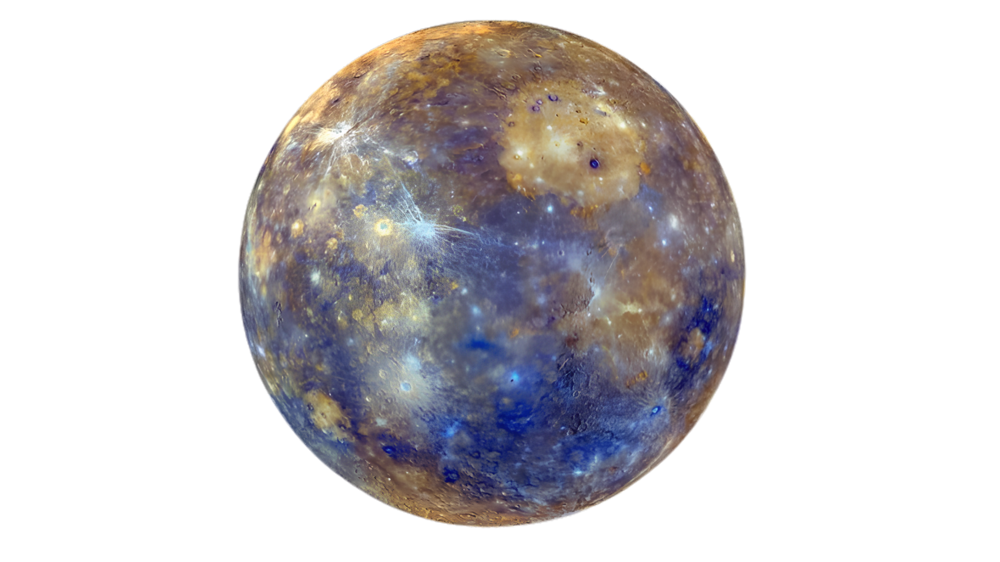
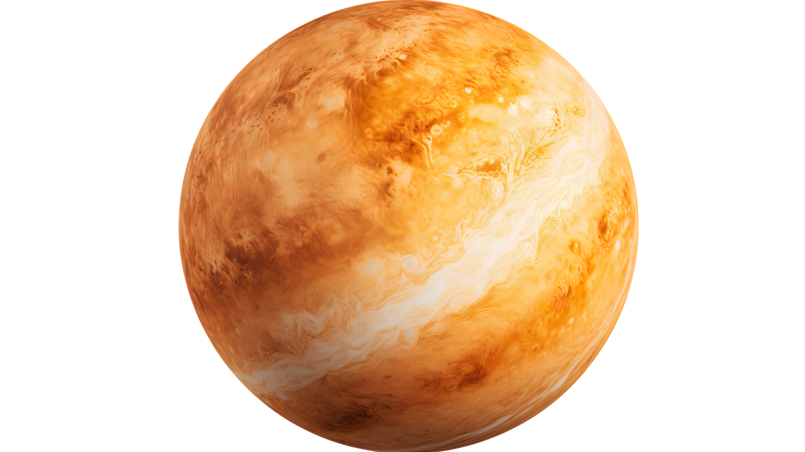
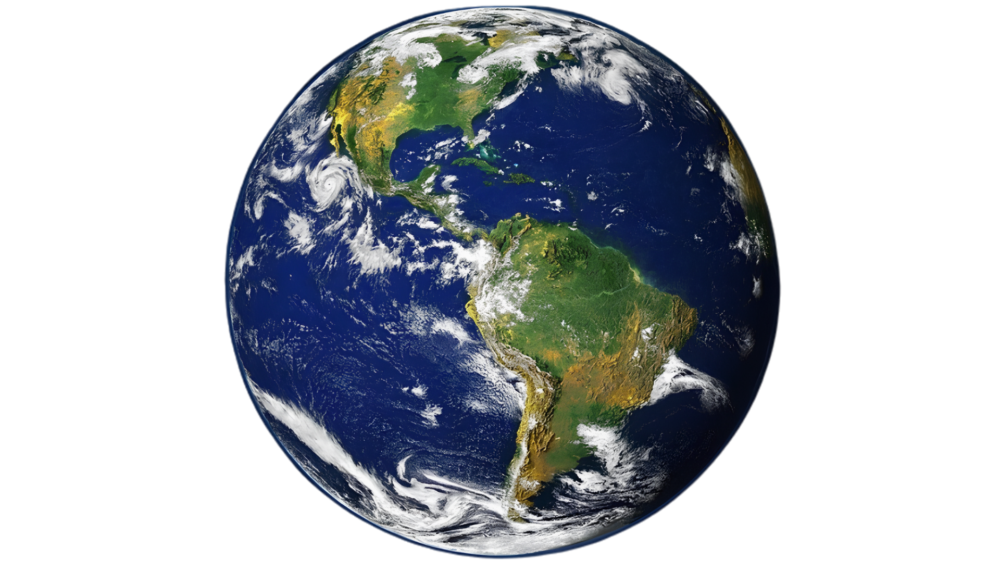
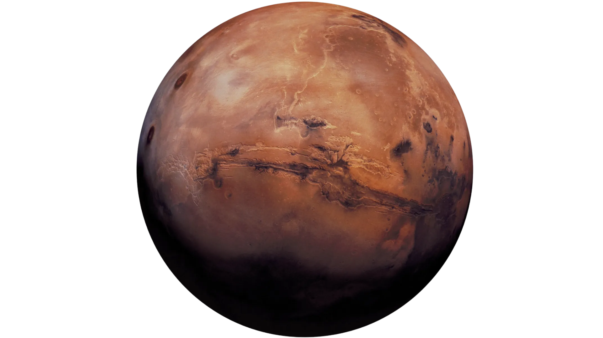
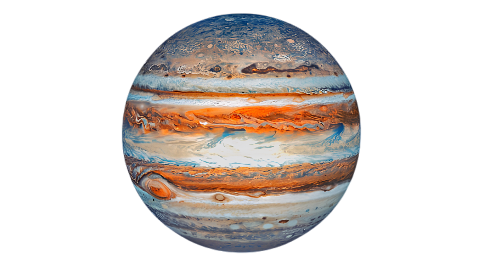
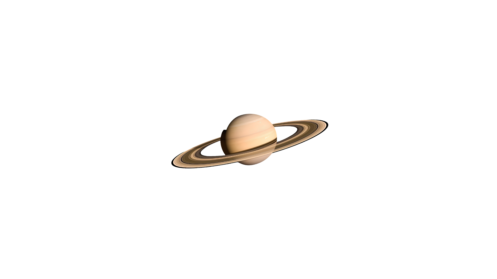
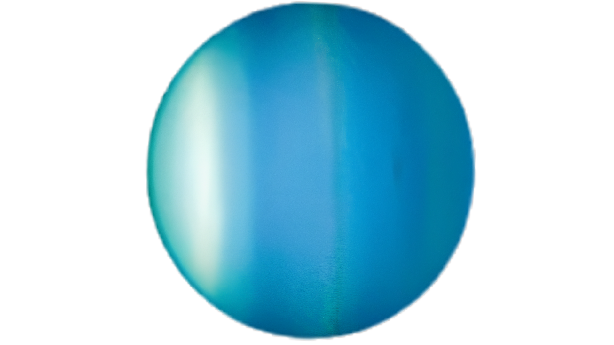
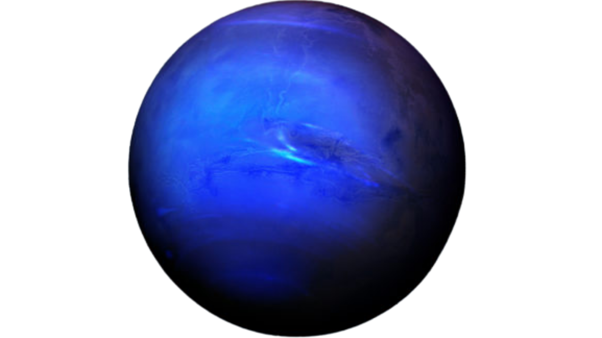

Mercúrio
- Tipo: Planeta Rochoso
- Tamanho: 4.879 km (Diâmetro)
- Temperatura: -180°C à noite até 430°C de dia
- Luas: 0
Curiosidade: Um ano em Mercúrio passa voando! Ele leva apenas 88 dias terrestres para dar uma volta completa em torno do Sol.
Vênus
- Tipo: Planeta Rochoso
- Tamanho: 12.104 km (Diâmetro)
- Temperatura: Cerca de 465°C (O mais quente)
- Luas: 0
Curiosidade: Em Vênus, o dia é mais longo que o ano! Ele demora mais tempo para dar uma volta em torno de si mesmo do que para dar uma volta ao redor do Sol.
Terra
- Tipo: Planeta Rochoso
- Tamanho: 12.742 km (Diâmetro)
- Temperatura: Média global de 15°C
- Luas: 1 (A nossa Lua)
Curiosidade: É o único planeta do Sistema Solar que sabemos que possui água líquida na superfície e uma atmosfera perfeita para a vida.
Marte
- Tipo: Planeta Rochoso
- Tamanho: 6.779 km (Diâmetro)
- Temperatura: Média de -65°C
- Luas: 2 (Phobos e Deimos)
Curiosidade: Marte tem o maior vulcão do sistema solar, o Olympus Mons.
Júpiter
- Tipo: Gigante Gasoso
- Tamanho: 139.820 km (Diâmetro)
- Temperatura: Cerca de -108°C
- Luas: 95 registradas
Curiosidade: Ele é tão imenso que caberiam mais de 1.300 Planetas Terra dentro dele. A sua famosa mancha vermelha é uma tempestade maior que a Terra que ruge há séculos.
Saturno
- Tipo: Gigante Gasoso
- Tamanho: 116.460 km (Diâmetro)
- Temperatura: Cerca de -139°C
- Luas: 146 registradas (O campeão!)
Curiosidade: Ele é feito quase todo de gás. Se existisse um oceano grande o suficiente para colocá-lo dentro, Saturno boiaria na água como se fosse uma bola de isopor.
Urano
- Tipo: Gigante Gelado (Gás e Gelo)
- Tamanho: 50.724 km (Diâmetro)
- Temperatura: Cerca de -197°C
- Luas: 28 registradas
Curiosidade: Urano é o único planeta que gira totalmente deitado em relação à sua órbita, como se fosse uma bola rolando de lado em torno do Sol.
Netuno
- Tipo: Gigante Gelado (Gás e Gelo)
- Tamanho: 49.244 km (Diâmetro)
- Temperatura: Cerca de -201°C (O mais frio)
- Luas: 16 registradas
Curiosidade: É o planeta dos superventos! Lá acontecem as tempestades mais violentas do Sistema Solar, com ventos que passam dos 2.100 km/h, mais rápidos que a velocidade do som.